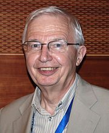
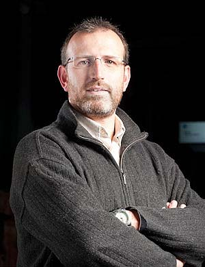
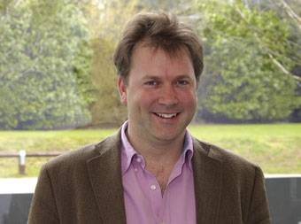
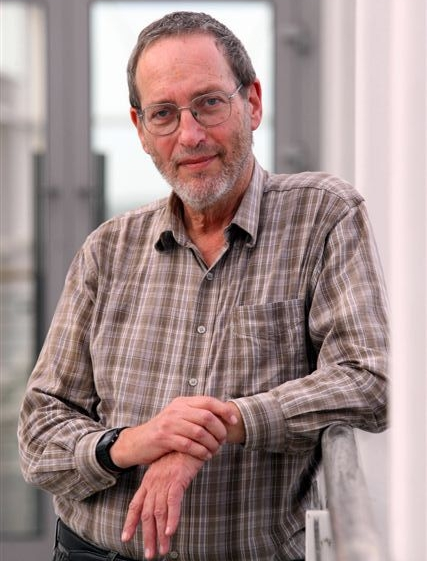

Keynote speakers

Jean-Marie Lehn   Home page
University of Strasbourg, Strasbourg, France
Nobel Laureate in Chemistry (1987)
Perspectives in Chemistry: From Supramolecular Chemistry towards Adaptive Chemistry
 
Bio: Jean-Marie Lehn was born in Rosheim, France in 1939. In 1970 he became Professor of Chemistry at the Université Louis Pasteur in Strasbourg and from 1979 to 2010 he was Professor at the Collège de France in Paris. He is presently Professor Emeritus at the University of Strasbourg. He shared the Nobel Prize in Chemistry in 1987 for his studies on the chemical basis of “molecular recognition” (i.e. the way in which a receptor molecule recognizes and selectively binds a substrate), which also plays a fundamental role in biological processes. Over the years his work led him to the definition of a new field of chemistry, which he has proposed calling “supramolecular chemistry” as it deals with the complex entities formed by the association of two or more chemical species held together by non-covalent intermolecular forces, whereas molecular chemistry concerns the entities constructed from atoms linked by covalent bonds. Subsequently, the area developed into the chemistry of "self-organization" processes and more recently towards "adaptive chemistry", dynamic networks and complex systems.
Author of more than 900 scientific publications, Lehn is a member of many academies and institutions. He has received numerous international honours and awards.
   

Patrick Aloy   Home page
Institute for Research in Biomedicine, Barcelona, Spain
ICREA Research Professor 
A network biology approach to novel therapeutic strategies
 
Bio: Born in Barcelona in 1972. He obtained his BSc in Biochemistry (1996), MSc in Biotechnology (1998) and PhD in Biochemistry & Molecular Biology (2000) from the Autonomous University of Barcelona. He then joined the Structural Bioinformatics Group at the European Molecular Biology Laboratory (2001) where he did his postdoctoral training. Since April 2006, Patrick Aloy is an ICREA Research Professor and Principal Investigator of the Structural Bioinformatics Lab in the Institute for Research in Biomedicine (IRB Barcelona). For fifteen years, Dr Aloy has been developing and implementing new technologies and algorithms, applying state-of-the-art methods to specific problems and bridging the gap between theoretical models and experiments in different disciplines. Nowadays, the main goal of the SB&NB lab is to combine computational and structural biology with interaction discovery experiments to unveil the basic wiring architecture of physio-pathological pathways. It is our believe that a deeper knowledge of the global topology of interactome networks related to human disease will have important bearings in the discovery of new drug targets and biomarkers, optimization of preclinical models and understanding how biological networks change from the healthy state to disease.
  
Ewan Birney   Home page
European Bioinformatics Institute, Hinxton, United Kingdom
Associate Director
Bio: Ewan Birney, a British biochemists and bioinformatitian born in 1972, is a leader in the computing and analysis of the genome.
After leaving Eton College and before enrolling at the University of Oxford, Birney interned at Cold Spring Harbor Laboratory, under the supervision of James Watson - a discoverer of the structure of DNA. Later, as a PhD student at the Wellcome Trust Sanger Institute in Cambridge, Birney was involved in the Human Genome Project, which was led by James Watson. Within the project, he helped to assembly the genome database. Shortly after receiving his PhD Birney was employed by the EMBL European Bioinformatics Institute in Cambridge, and soon started to coordinate large-scale collaborative projects. Among others, two big public databases resulted from these projects: Ensembl Genome Browser, with vertebrate genomes and gene annotations, and ENCODE (Encyclopedia of DNA Elements), a database of functional elements in the human genome. Ewan Birney and his team also developed a number of open-source and wildly-used bioinformatics tools. For his outstanding achievements, Birney was awarded with various awards such as the Francis Crick Lecture from the Royal Society (2003), Chris Overton Prize from the international Society for Computational Biology (2005) and the Benjamin Franklin Award (2005) for contributions in Open Source Bioinformatics from Bioinformatics.org in association with BioIT. The current research of Birney’s group focuses on sequence algorithms to store digital data in DNA molecules, and on associating natural genome variations with cellular phenotypes. Since 2012, Ewan Birney also serves as an Associate Director of EMBL-EBI. Ewan Birney maintains a blog, Bioinformatician at Large, and is active on Twitter with over 5000 followers.
 

 Doron Lancet   Home page
The Weizmann Institute of Science, Rehovot, Israel
Professor in the Department of Molecular Genetics, Head of the Crown Human Genome Center
Rational confederation of genes and diseases
 
Bio: Prof. Lancet earned his BSc in chemistry from the Hebrew University of Jerusalem, and his PhD is in Chemical Immunology from the Weizmann Institute of Science. Following postdoctoral training at Harvard and Yale, he joined the Weizmann Institute faculty in 1981, where he is currently the incumbent of the Silver Professorial Chair in Human Genomics and Head of the Crown Human Genome Center. Prof. Lancet has played a key role in establishing genome research in Israel, and is presently involved in the establishment of a National Center for Personalized Medicine at Weizmann. A pioneer of research on the sense of smell, he discovered key protein components of this sensory mechanism. He now studies the population genetics of human olfaction, showing that each human individual has a “personal nose”.  In parallel, Lancet runs several programs for disease gene discovery, including an international collaborative study on genome sequencing for rare monogenic diseases. In the realm of bioinformatics, Lancet developed GeneCards, a world-renown automatically-mined web compendium of human genes. Recently, he developed the companion database MalaCards, a comprehensive web tool for human diseases. Lancet was awarded the first international Takasago Award in Japan on olfactory research (1986), the Wright Award in the USA (1998) and the Landau Prize in Human Genetics in Israel (2008). He is member of the European Molecular Biology Organization since 1996 and was Council member of the Human Genome Organization (2007-2012). Lancet wrote a science column in the major Israeli daily Haaretz, and often delivers public lectures and interviews on the human genome project.
   

 Nada Lavrač   Home page
Jožef Stefan Institute, Ljubljana and University of Nova Gorica, Nova Gorcia, Slovenia
Professor, Head of Department of Knowledge Technologies
Advances in data mining for biomedical research
 
Bio: Nada Lavrač is Head of Department of Knowledge Technologies at Jozef Stefan Institute, Ljubljana, Slovenia.  She is also Professor at the Jozef Stefan International Postgraduate School in Ljubljana and at the University of Nova Gorica. Her main research interests are in Knowledge Technologies, with particular interests in machine learning, data mining, text mining, knowledge management and computational creativity. She is author of several books, including the recently published Foundations of Rule Learning, Springer 2012. Her special interest is in supervised descriptive rule induction, where the research goal is to automatically induce rules from class labeled data, stored either in simple tabular format or in complex relational databases. Areas of her applied research include data mining applications in medicine, health care and bioinformatics.
 
 Alice Carolyn McHardy   Home page
HHU Düsseldorf and Helmholtz Center for Infection Biology in Braunschweig, Germany
Chair of the Department for Algorithmic Bioinformatics at HHU, Head of the Computational Biology for Infection Research Group at the Helmholtz Center
Gaining Insight into the Uncultured Microbial World by Computational Metagenome Analysis
 
Bio: Alice McHardy’s research interest is the design of computational methods to solve problems from the medical and biotechnological domains using next generation sequence data. A particular focus is the study of the evolution of influenza A viruses and characterizing the taxonomic composition, functions and evolution of microbial communities using metagenome sequence samples. She has a PhD in bioinformatics and a master’s degree in biochemistry, both from Bielefeld University. From 2005 to 2007 she worked as a postdoctoral researcher, then as a permanent staff member in the Bioinformatics & Pattern Discovery Group at the IBM T.J. Watson Research Center in Yorktown Heights, NY. From 2007 to 2012 she led the Max-Planck research group for Computational Genomics & Epidemiology at the Max-Planck institute for Informatics in Saarbruecken, Germany.
 
Eric Westhof  Home page 
University of Strasbourg, Strasbourg, France
Professor, Director of the Institute of Molecular and Cellular Biology, CNRS
The Detection of Architectural Modules in RNA sequences and the RNA-Puzzles Modeling Contest
Bio: Eric Westhof received his Ph.D. in Biophysics in 1974 (Liège University, Belgium) after graduate work at Regensburg University, Germany. In 1977, as a FULBRIGHT-HAYS Research Fellow, he joined the Department of Biochemistry, University of Wisconsin (Madison, USA) to work with M. Sundaralingam in crystallography of nucleic acids. In 1981, with a EMBO post-doctoral fellowship, he moved to Strasbourg to work with Dino Moras on transfer RNA crystals. In 1988, he became Professor of Structural Biochemistry at the University of Strasbourg. Since 2006, he is Director of the Institut de Biologie Moléculaire et Cellulaire and head of the unit Architecture et Réactivité de l’ARN of the CNRS. He is an executive editor of RNA Journal and Nucleic Acids Research and a member of EMBO, Deutsche Akademie der Naturforscher LEOPOLDINA, Academia Europaea, the Académie des Sciences.
His research activities are centered on the relationships between sequences, architectures, evolution and functions of RNA molecules, especially those with catalytic activity. With his collaborators, he develops and studies RNA sequence alignments in the light of RNA structures and architectures in order to identify RNA modules and to develop rules for predicting RNA folds and functions. The rules are transformed into algorithms for manipulating and assembling RNA architectures ab initio or in density maps. The tools used are X-ray crystallography, bioinformatics, sequence comparisons, three-dimensional modeling and molecular dynamics simulations.